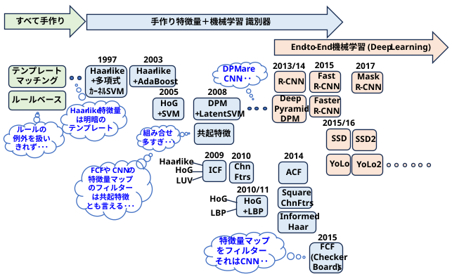

画像や動画の中から人間の歩行者を自動で認識し、その位置を特定するコンピュータビジョンおよび物体検出の応用タスク。一般的には、画像内の歩行者を四角い枠（バウンディングボックス）で囲んで検出する。
一般的な「物体検出（車や椅子など）」に比べ、歩行者検出には以下のような特有の難しさがある。
二段階(*)で AI 化(機械学習化) されていった歴史を眺めることができる。
* ① 検出器の機械学習化 → ② 特徴量生成＋検出器 の機械学習化

● 『Training support vector machines: an application to face detection』 (CVPR1997)
● 『Pedestrian detection using wavelet templates』 (CVPR1997)
1990年代中盤までの物体認識は、物体のエッジを検出して3次元の幾何学的なモデルを組み立てるアプローチ（手画きのルールベース）が主流でした。しかし、これらは服装の変化や乱雑な (clutter) 背景に弱いという致命的な弱点がありました。
Papageorgiouらの手法は、「大量のデータから特徴と識別器を機械学習（SVM）によって獲得する」という現代の画像認識に直結するデータ駆動型アプローチの有効性を決定づけたパイオニアです。
のちにデジタルカメラの顔認識などで世界中で実用化されたViola-Jones 法（2001年）は、このPapageorgiouの手法を直接ベースにしています。
この研究で示された「画像から局所的な輝度勾配や明暗差を抜き出し、SVMで識別する」という (手作りの局所特徴量＋機械学習で作成した識別器) パイプライン は、その後のコンピュータビジョン界の王道となりました。
● 『Detecting Pedestrians Using Patterns of Motion and Appearance』 (2003)
デジタルカメラの顔認識で一世を風靡した伝説的な Viola-Jones法（2001年） を、動画内の「動く歩行者」向けに進化させたもの。
外見（Appearance）と動き（Motion）の融合
それまでの物体検出は、1枚の静止画から形を捉える「外見ベース」か、映像の差分から動体を捉える「動きベース」のいずれかに偏っていました。この論文は、ビデオの連続する2フレームを同時にスキャンし、外見と動きの情報を単一の識別器の中で初めて統合しました。
のちの動画理解、行動認識（Action Recognition）、自動運転システムにおける歩行者行動予測の基礎となる考え方です。
時空間Haar-like特徴量
静止画用の矩形フィルタ（Haar-like特徴量）を時間軸に拡張し、前のフレームと今のフレームの特定の場所の明暗差（＝動きのパターン）を計算する特徴量を定義しました。
超小型・遠距離の歩行者に対応
AdaBoostによる高速な処理能力を活かし、解像度がわずか 20×15ピクセル 程度の、画面の奥にいる非常に小さな歩行者でも高い精度かつ低誤検出率で検出することに成功しました。
● 『Histograms of Oriented Gradients for Human Detection』 (CVPR2005)
コンピュータビジョン、特に「歩行者・人物検出」の分野においてディープラーニング（CNN）が登場する前までの最高峰の基準（ゴールデンスタンダード）を確立した、歴史的な超重要論文です。
それまでのHaar-like特徴量のような単純な明暗差ではなく、画像の「輝度勾配（エッジ）の方向と強さ」に注目し、それを統計的なヒストグラムとして表現する手法を提案しました。
人物の「輪郭（シェイプ）」を捉える決定版となった
顔とは異なり、歩行者は服装（色や柄）、背景、体型、姿勢が激しく変化するため、明暗差ベースのHaar-like特徴量では誤検出が多発していました。
本論文は、人間を識別する最大のヒントが「衣服の模様や色ではなく、外見の輪郭（エッジの分布）」にあることを見抜き、それを緻密なヒストグラムで捉えることに成功しました。これにより、複雑な背景の中に立つ様々な服装の人間を正確に検出できるようになりました。
現在のCNNの内部フィルタも、本質的にはこのHOGのような「エッジの方向」を抽出する処理を自動で学習していることが分かっています。
徹底的な実験による「職人技（ハンドクラフテッド特徴量）」の頂点
この論文の恐ろしい点は、特徴量抽出の各ステップ（平滑化フィルタの有無、方向の分割数、ブロックの重ね合わせ方など）をすべて徹底的に実験し、「何が性能に直結するのか」を数値的に証明した点にあります。
• 「画像にガウシアンフィルタ等でぼかしを入れない（細かいエッジが重要）」
• 「エッジの方向は0〜180度（符号なし）を9分割するのがベスト」
• 「ブロックをオーバーラップさせて高精度に局所正規化を行う」
といった、現代でも手画き特徴量（Hand-crafted features）を扱う上での黄金律がここで完成しました。
データセット「INRIA Dataset」の提供
本手法の性能があまりに高すぎたため、当時主流だったMITの歩行者データベースでは「ほぼ正解率100%（完璧な分離）」を達成してしまいました。
そこで著者らは、より複雑な姿勢や多様な背景、ノイズを含む「INRIA Person Dataset（INRIAデータセット）」を自ら作成して公開しました
● 『A Discriminatively Trained, Multiscale, Deformable Part Model 』 (2008)
「ディープラーニング以前（古典的機械学習手法）の最高到達点」かつ「最高峰の金字塔」として位置づけられる極めて重要な論文です。
のちにコンピュータビジョンの最高栄誉の一つである「CVPR Longuet-Higgins Prize (2018年)」を受賞しています。
姿勢変化や変形への強力なアプローチ（変形可能パーツモデル）
従来の物体検出（[Dalal & TriggsのHOG特徴量など）は、物体を「固まった一つの四角形」として捉えるため、人が腕を曲げたり歩いたりするような「姿勢の変化や変形」に対応するのが苦手でした。DPMは、物体全体を捉える粗いフィルタ（Root Filter）と、各部位を詳細に捉える高解像度なパーツフィルタ（Part Filter）を組み合わせ、さらにそれらの「相対的な位置のズレ（変形コスト）」を数理モデル化（スプリングのような制約）することで解決しました。
潜在変数（Latent Variables）を取り入れたSVMの導入
パーツごとのアノテーション（「ここが手」「ここが足」というラベル付け）を人間が手動で行うのは膨大なコストがかかります。DPMでは Latent SVM（潜在SVM） を用いることで、物体の外形（Bounding Box）のデータさえ与えれば、「パーツの最適な分割位置」を学習の過程で自動的に推定（潜在変数として処理）できるようにしました。
ハードネガティブマイニング（Hard Negative Mining）の定式化
画像認識において、背景（負例）のパターンは無限に存在します。DPMでは、誤検知しやすい「紛らわしい背景（ハードネガティブ）」を効率的に収集してモデルを鍛え直すデータマイニング手法を最適化に組み込み、限られたメモリで高精度な識別器を作ることに成功しました。
圧倒的な精度の向上
当時の難関ベンチマークであった「PASCAL VOC」において、これまでの手法に比べて平均精度（AP）を約2倍に引き上げるなど、当時の世界最高精度（State-of-the-art）を塗り替え、数年間にわたり王座に君臨しました。
CNNとの親和性と直系の系譜
著者の一人であるRoss Girshick氏は、のちにディープラーニングを用いた物体検出の先駆けとなる「R-CNN」を開発する人物です。実は、DPMの「特徴量を抽出して」「フィルタをかけ」「ズレを許容して統合する」というプロセスは、現在の畳み込みニューラルネットワーク（CNN）の構造と理論的に非常によく似ています（のちに「DPMはCNNの一種として定式化できる」という論文も本著者らから発表されています）。
現在の物体検出（YOLOやTransformer系の[Deformable DETRなど）でも使われている、「物体をいくつかのコンポーネントやアスペクト比に分けて捉える」という思想や「データマイニングによる学習の効率化」のルーツは、このDPMに深く刻まれています。
● 『Integral Channel Features』 (2009)
Integral channel feature - Wikipedia
DPMが「複雑な数理モデル（構造・変形）で精度を極める方向」の頂点だったのに対し、このICFは「多様な特徴量を効率的に統合し、圧倒的な計算速度と高い精度を両立する方向」の頂点に位置づけられます。
「顔検出の王道」と「HOG」の融合・超拡張
2001年に登場した「Viola-Jones法（カスケード分類器＋Haar-like特徴量＋積分画像による高速化）」は Integral Channel Featuresによる歩行者認識、顔検出を爆速にしましたが、複雑な歩行者検出には表現力が足りませんでした。ICFは、その「積分画像（Integral Image）を使って矩形領域の合計を高速に計算する」というアイデアを、輝度だけでなく「カラー（LUV領域）」「勾配の強度」「HOGのような勾配方向ヒストグラム」など、複数の異なる画像チャンネル（Channel）へ一挙に拡張しました。
ヘテロ（異質）な情報の超高速な処理
色、エッジ、テクスチャといった全く異なる性質の情報を、あらかじめ複数チャンネルの「積分画像」にしておくことで、どんなサイズや位置の矩形特徴量（領域内の和や差）も、わずか数回のメモリバンプ（定数時間 O(1)）で超高速に抽出できるようになりました。
Boosting（AdaBoost）による自動特徴選択
異質なチャンネルから生成される膨大な数の特徴量候補の中から、機械学習アルゴリズム（AdaBoost）を用いて「本当に識別に役立つ有効な特徴量」だけを自動的に選択・カスケード化しました。これにより、不要な計算をカットし処理を劇的に高速化させました。
歩行者検出ベンチマークでの圧倒的成果
当時の主要な評価データセット（INRIAやCaltech Pedestrian Dataset）において、それまでの標準だったHOGを精度・速度とも大きく凌駕し、当時の最高性能（State-of-the-art）へと躍り出ました。
• DPMがモデルの構造を複雑（パーツのズレの計算など）にして精度を求めたのに対し、ICFは「複雑な探索はせず、強力な多次元特徴量を効率的に畳み込む（積分画像）」ことで処理を簡潔に保ちました。そのため、車載カメラや監視カメラなどのリソースが限られた「リアルタイムな実用システム」においては、DPM以上に重宝された技術です。
● 『Fast Feature Pyramids for Object Detection』 (2014)
ICF（2009年）の理論を進化させ、のちの物体検出に欠かせない概念となる「特徴量ピラミッド（Feature Pyramids）の超高速化」の文脈の中で、その高速化を具現化する検出器としてACFが提唱されました
積分画像すら排除した「ピクセルの集約（Aggregated）」による高速化
ICFでは、任意の矩形（四角形）の特徴量を高速計算するために「積分画像（Integral Image）」を作っていましたが、それでもメモリバンプの回数や計算負荷がボトルネックになっていました。ACFでは、積分画像を作るのをやめ、各チャンネル（色や勾配）のマップ自体を数ピクセル単位で平滑化・ダウンサンプリング（集約：Aggregate）し、そのピクセル値をそのまま特徴量としてベクトル化するアプローチをとりました。これにより、計算工程が極限までシンプルになりました。
特徴量ピラミッド（マルチスケール）の計算爆速化
画像認識において、遠くの小さい物体や近くの大きい物体を捉えるには、画像を様々なサイズに縮小した「画像ピラミッド」を作り、そのすべてで特徴量を計算する必要があり、これが最大の計算負荷でした。本論文の最大のコアは、「すべてのスケールで大真面目に特徴量を計算しなくても、1つのスケールで計算した特徴量から、他のスケールの特徴量を数学的に近似（補間）して高速に生成できる」という法則（スケーリング特性）を発見・定式化した点にあります。
圧倒的なリアルタイム性の実現
この特徴量ピラミッドの高速近似とACFのシンプルな構造を組み合わせることで、当時の最高峰の精度を維持したまま、一般的なCPU（当時）でも数十FPS〜100FPSを超える圧倒的な超高速検出を可能にしました。
ACFは「徹底的に無駄を削ぎ落として速度を極めた（軽い）」という対照的な位置づけです。このため、黎明期の車載カメラによる歩行者検知システム、ロボットビジョン、ドローンの制御など、GPUが積めない、あるいは電力が限られたハードウェア環境において、ACFは非常に長く実用され続けました。
ディープラーニング（CNN）が登場した初期の時代、CNNは精度は高いものの計算が非常に重いという欠点がありました。そこで、「まず超軽量なACFを使って、画像の中から物体がありそうな候補（Region Proposals）を高速に絞り込み、そこだけを重いCNNに処理させる」という、ACF＋CNNのハイブリッド手法が研究され、Faster R-CNNなどの発展にも寄与しました。
現在のディープラーニング（YOLOなど）でも、異なる解像度の特徴マップを組み合わせてマルチスケールに対応する手法（FPN: Feature Pyramid Networkなど）が標準搭載されています。物体検出において「スケールの変化にどう効率的に対応するか」という課題に対し、本論文が示した「特徴量ピラミッドの効率化」というアプローチは、現代のAIモデルの構造にも大きな影響を与えています。
● 『Informed haar-like features improve pedestrian detection』 (2014)
● 『Filtered channel features for pedestrian detection』 CheckerBoards (2015)
ディープラーニング（CNN）が急速に台頭しつつあった2014〜2015年において、「古典的なハンドクラフト特徴量（ICF/ACF）の限界を突破し、CNNに対抗しようとした最後の進化系」として位置づけられます。
ICFやACFをベースにしながら、弱点であった「解像度や表現力の粗さ」を洗練されたアプローチで克服し、歩行者検出における当時の世界最高精度（State-of-the-art）を塗り替えた重要な意義を持っています。
Informed Haar: 「人間の身体構造」という事前知識（Informed）の導入
ICF/ACFで使われていた矩形（四角形）特徴量は、ランダムまたはグリッド状に配置された「ただの四角」であり、物体の幾何学的な構造を考慮していませんでした。この論文では、歩行者の「頭」「胴体」「足」といった人間の身体のパーツ配置やアスペクト比の統計的な事前知識（Informed）をアルゴリズムに組み込みました。
Informed Haar: 特徴量空間の効率化と精度向上
人間が歩行者の形に合わせて設計・厳選した特徴テンプレート（Informed Haar-like）を用いることで、無駄な特徴量を排除し、より識別能力の高い強力な特徴を効率的に学習（AdaBoost）させました。これにより、従来のACFなどのランダムな特徴抽出に比べて、特にオクルージョン（物体の重なり）や背景のノイズに対する耐性が大幅に向上しました。
Informed Haar: 「パーツベースの思想」と「高速チャネル特徴量」の融合
DPM（変形パーツモデル）が持っていた「人間の構造を捉える」という強みと、ICF/ACFの「高速に処理する」という強みをスマートに合体させた位置づけです。CNNが台頭する直前の歩行者検出ベンチマーク（Caltech Pedestrianなど）において、非ディープラーニング手法の中でトップクラスの性能を叩き出しました。
FCF(CheckerBoards): 「手動設計（ハンドクラフト）」と「CNN」の境界線を無くしたフィルタリング
前作のACFは、チャネル（色や勾配）のピクセル値をただ「四角く平均化（集約）」するだけの粗い手法でした。この論文（通称：FCF）は、「単なる平均化ではなく、チャネル画像に対して様々な『フィルタ（畳み込みカーネル）』をかけることで、より高度な特徴を抽出できる」という点に着目しました。ガウシアンフィルタや、さまざまなエッジ検出フィルタなどをチャネルに適用し、特徴量の表現力を一気に引き上げました。
FCF(CheckerBoards): 古典的手法の「究極進化系」であり「CNNへの完全な降伏点」
「入力画像から複数のチャネルを作り、そこに複数のフィルタ（カーネル）を掛け合わせて特徴を抽出する」というFCFの構造は、数理的に「CNNの第1層・第2層の畳み込み層」と完全に一致しています。違いは、フィルタの数値を「人間が設計（FCF）」したか、「データから自動学習（CNN）」させたかだけです。
本論文は、ハンドクラフト特徴量が理論的に洗練された結果、皮肉にも「CNNの構造がいかに正しいか」を証明する形となり、古典的手法の歴史を締めくくる金字塔（かつ最後の抵抗）となりました。実際に、このFCFの直後から、歩行者検出のベンチマークは完全にCNN一色へと塗り替えられていくことになります。
● 『Rich feature hierarchies for accurate object detection and semantic segmentation』 (CVPR2014)
それまでの主流だった「HOG特徴量」 などを用いた人間の手作りのルールによる検出に比べ、CNNによる自己学習で歩行者の特徴（衣服、姿勢、輪郭など）を捉えることで、検出精度を劇的に向上させました。
1枚の画像から「歩行者がいそうな領域（Selective Search）」を約2,000箇所も切り出して、そのすべてにCNNを適用したため、処理が極めて重く、自動運転や防犯カメラなどのリアルタイム検出には全く使えませんでした。
● 『Fast R-CNN』 (2015)
画像全体に対してCNNの計算を「1回だけ」行い、その特徴マップから各領域（歩行者候補）を切り出す方式（RoI Pooling）を採用しました。これにより、何百人もの歩行者候補が密集している画像でも、R-CNNに比べて数十倍もの高速化と精度の向上を同時に達成しました。
歩行者が「どこにいるか」の候補を探す最初の処理（Selective Search）はまだCPUで外部処理していたため、そこがボトルネックとなり完全なリアルタイム化には届きませんでした。
● 『Faster R-CNN: Towards Real-Time Object Detection with Region Proposal Networks』 (NIPS2015)
歩行者の候補領域を検出する「RPN (Region Proposal Network)」をネットワーク内部に組み込みました。これによってすべての処理がGPU上で完結し、劇的な高速化を達成しました。さらに、歩行者のような縦長の物体に適した「アンカーボックス」の概念が導入されたことで、遠くにいる小さな歩行者や、体の一部が隠れている（オクルージョン）歩行者でも極めて高い精度でリアルタイムに検出可能になりました。自動運転技術などの基盤となっています。
● 『Mask R-CNN』 (ICC2017)
Faster R-CNNをベースに、歩行者をピクセル単位の正確な形（マスク）として抽出する機能（インスタンスセグメンテーション）が追加されました。
単に「ここに人がいる（四角い枠）」だけでなく、「その歩行者がどの向きに、どんな姿勢で、どこまで体があるか」を正確に把握できるようになりました。これにより、車道に足を踏み出しそうな歩行者の「細かな挙動の予測」や、道路上の白線・障害物と歩行者の「正確な境界線」を識別することが可能になり、安全性向上のために不可欠な技術という位置づけになりました。
● 『Deformable Part Models are Convolutional Neural Networks』 (arxiv 2014, CVPR 2015)
等価性の証明
従来の物体検出モデルである DPM（Deformable Part Models）の推論アルゴリズムのループをほどき（unrolling）、各ステップを等価な CNN（畳み込みニューラルネットワーク）のレイヤーに対応づけることで、DPMがCNNの一種として表現できることを示しました。
DeepPyramid DPM
従来のHOG（Histogram of Oriented Gradients）特徴量の代わりに、学習済みのCNN特徴量抽出器を組み込んだモデルを提案しました。
パフォーマンス
PASCAL VOCデータセットでの評価において、従来のHOGベースのDPMを大きく上回り、R-CNNシステムに匹敵する精度を、1桁速い速度で実現しました。
●『You Only Look Once: Unified, Real-Time Object Detection』 (CVPR2016)
Faster R-CNNなどの「2段階検出（Two-stage）」が『候補探し ➔ 分類』と2回ステップを踏むのに対し、YOLOシリーズとこの後のSSDシリーズは「画像を一回見るだけで（Single Shot）、位置も種類も同時に予測する」というアプローチを取ります。
画像を縦横の格子（グリッドセル）に分割し、各セルが「そこにある物体の枠（バウンディングボックス）」と「確率」を同時に一発で予測します。これにより、動画のフレームレート（FPS）を落とさずに歩行者を追跡できるようになりました。画像全体を一度に見るため、背景の誤検出（背景のシミを人間と見間違えるなど）が非常に少ない点も優秀です。
初期（v1〜v2）は「小さな物体」や「密集した歩行者」の検出が苦手でした。しかし、YOLOv3以降や近年の最新版（v8など）では、異なる大きさの特徴を捉える技術（FPN等）を取り入れ、遠くにいる小さな歩行者も高精度で捉えられるよう進化し続けています。
● 『SSD: Single Shot MultiBox Detector』 (ECCV2016)
YOLOv1の最大の弱点であった「小さい物体の検出漏れ」を、「マルチスケール特徴マップ」というアイデアで解決しました。 ネットワークの中間層（浅い層＝細かい模様が見える）からは遠くの小さな歩行者を検出し、深い層（全体が見える）からは近くの大きな歩行者を検出します。これにあらかじめ様々な比率の枠（デフォルトボックス）を組み合わせることで、1段階検出の手軽さを維持したまま、歩行者検出の精度を劇的に向上させました。
初期のYOLOに比べて「実装がシンプルで、様々なサイズが混在する物体に対して安定して強い」ため、産業用ロボットやエッジデバイス（小型カメラなど）への組み込みモデルとして長らく王座に君臨しました。